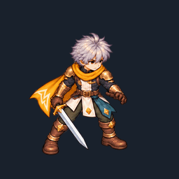

One southeast-facing candidate. Eight timed entries over 800 ms; the final entry reuses the exact ready drawing. Review the knees, hips, chest and released rear foot with the trail hidden.
Separate transparent trail and body strips are included. Head, clothing and sword are still flattened into the body layer. Other painted directions and game integration remain unfinished.
